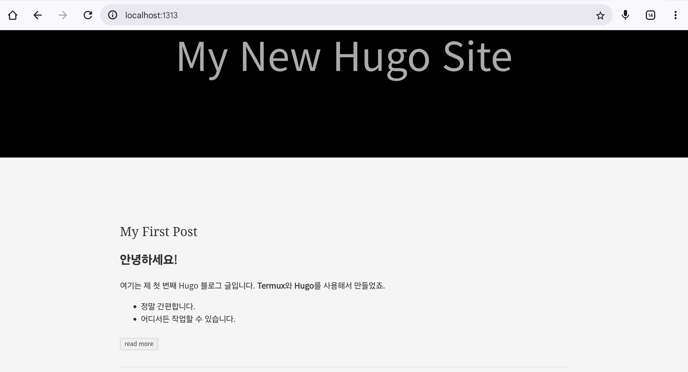

Ubuntu에서 Hugo로 나만의 블로그 만들기
오늘은 개발자들 사이에서 빠르고 강력하기로 정평이 난 정적 사이트 생성기(SSG), Hugo를 사용하여 Ubuntu 환경에서 나만의 블로그를 만드는 전체 과정을 안내해 드리겠습니다.
WordPress와 같은 동적 CMS에 익숙하신 분들께 ‘정적 사이트’라는 개념이 낯설 수 있습니다. 간단히 설명하자면, 사용자가 요청할 때마다 데이터베이스를 거쳐 페이지를 만드는 동적 방식과 달리, 정적 사이트는 미리 완성된 HTML 파일을 서버에 올려두고 그대로 보여주는 방식입니다. 이 덕분에 로딩 속도가 매우 빠르고, 데이터베이스가 없어 보안에도 훨씬 유리합니다.
이 가이드는 Ubuntu 환경과 터미널 사용에 어느 정도 익숙한 분들을 대상으로 합니다. 차근차근 따라오시면, 누구나 자신만의 빠르고 멋진 블로그를 가질 수 있습니다.
Hugo 설치하기
가장 먼저 할 일은 Hugo를 우리 Ubuntu 시스템에 설치하는 것입니다. 여러 방법이 있지만, 패키지 관리자인 snap을 이용하는 것이 가장 간단하고 최신 버전을 유지하기 좋습니다.
sudo snap install hugo설치가 완료되면, 버전 확인 명령어로 제대로 설치되었는지 확인합니다.
hugo version만약 hugo v0.127.0-... 와 같은 버전 정보가 출력된다면 성공적으로 설치된 것입니다.
새 블로그 프로젝트 생성
이제 Hugo를 이용하여 블로그의 기본 뼈대를 만들 차례입니다. 원하는 경로로 이동한 후, 아래 명령어를 실행하여 my-blog라는 이름의 새 사이트를 생성합니다. (물론 my-blog는 원하는 이름으로 변경 가능합니다.)
hugo new site my-blog명령이 실행되면 my-blog라는 디렉토리가 생성되고, 그 안에는 다음과 같은 Hugo의 표준 디렉토리 구조가 만들어집니다.
my-blog/
├── archetypes/
├── content/
├── data/
├── layouts/
├── public/
├── static/
├── themes/
└── hugo.toml각 디렉토리의 역할은 간단히 다음과 같습니다.
content/: 실제 블로그 글(마크다운 파일)이 저장되는 곳입니다.themes/: 블로그의 디자인을 담당하는 테마가 위치합니다.static/: 이미지, CSS, JavaScript 등 정적 파일들을 넣는 곳입니다.hugo.toml: 블로그의 제목, 언어, 테마 등 전반적인 설정을 담당하는 파일입니다.
테마 선택 및 적용
뼈대만 있는 블로그에 디자인 테마를 입혀야 합니다. Hugo는 전 세계 개발자들이 만들어 공유하는 수많은 테마를 자랑합니다.
Hugo 공식 테마 사이트에서 마음에 드는 테마를 골라보세요.
이 가이드에서는 ‘Ananke’라는 인기 있고 깔끔한 테마를 예시로 사용하겠습니다. my-blog 디렉토리 안에서 다음 명령어를 실행하여 테마를 설치합니다.
cd my-blog
git init # 아직 git 저장소가 아니라면 초기화합니다.
git submodule add https://github.com/theNewDynamic/gohugo-theme-ananke.git themes/anankegit submodule을 사용하는 이유는 테마의 원본 저장소와 연결을 유지하여, 나중에 테마가 업데이트되었을 때 쉽게 반영할 수 있기 때문입니다.
이제 설치한 테마를 블로그에 적용할 차례입니다. hugo.toml 설정 파일을 열고 맨 아래에 다음 한 줄을 추가합니다.
theme = 'ananke'첫 번째 글 작성하기
블로그의 핵심은 콘텐츠입니다. Hugo는 마크다운(.md) 형식으로 글을 작성합니다. 터미널에서 아래 명령어로 첫 번째 글을 생성해 보겠습니다.
hugo new content posts/my-first-post.md이 명령은 content/posts/ 디렉토리 안에 my-first-post.md 파일을 생성합니다. 이제 텍스트 에디터로 이 파일을 열어보겠습니다.
---
title: "My First Post"
date: 2025-06-25T10:25:51+09:00
draft: true
---
여기에 본문 내용을 작성합니다.
**안녕하세요, Hugo!**파일 상단의 ---로 둘러싸인 부분을 Front Matter라고 부릅니다. 글의 제목, 작성일, 공개 여부 등 메타데이터를 정의하는 중요한 영역입니다.
가장 중요한 점! draft: true는 이 글이 아직 초고 상태임을 의미합니다. 블로그에 정식으로 발행하려면 이 값을 draft: false로 변경하거나 이 줄을 삭제해야 합니다.
이제 Front Matter 아래에 자유롭게 마크다운 문법으로 글을 작성하면 됩니다.
로컬 서버에서 확인하기
작성한 글이 블로그에서 어떻게 보일지 궁금하실 겁니다. Hugo는 강력한 내장 웹 서버를 제공하여, 내 컴퓨터에서 실시간으로 변경사항을 확인하며 작업할 수 있습니다.
my-blog 디렉토리에서 아래 명령어를 실행하세요.
hugo server -D여기서 -D 옵션은 draft: true 상태인 초고 글까지 모두 포함해서 보여달라는 의미입니다. 개발 중에는 아주 유용한 옵션입니다.
터미널에 다음과 같은 메시지가 나타날 것입니다.
Web Server is available at http://localhost:1313/ (bind address 127.0.0.1)이제 웹 브라우저를 열고 주소창에 http://localhost:1313을 입력해 보세요. 방금 설치한 Ananke 테마가 적용되고, 작성한 첫 번째 글이 목록에 나타나는 것을 확인할 수 있습니다.

마치며
지금까지 Ubuntu 환경에서 Hugo를 설치하고, 블로그를 생성하여 첫 글을 작성하고, 서버에 배포할 파일을 만드는 전체 과정을 알아보았습니다.
Hugo는 처음에는 조금 낯설 수 있지만, 일단 익숙해지면 그 속도와 단순함, 그리고 강력한 기능에 매료될 것입니다. 오늘 만든 기본 블로그를 바탕으로 자신만의 테마를 만들거나, 다양한 설정을 변경하며 개성 있는 블로그로 발전시켜 나가시길 바랍니다.
궁금한 점이 있다면 언제든 댓글로 질문해 주세요. 여러분의 성공적인 블로그 운영을 응원하겠습니다.
참조:
- Hugo 공식 문서: https://gohugo.io/documentation/
- Hugo 테마 사이트: https://themes.gohugo.io/